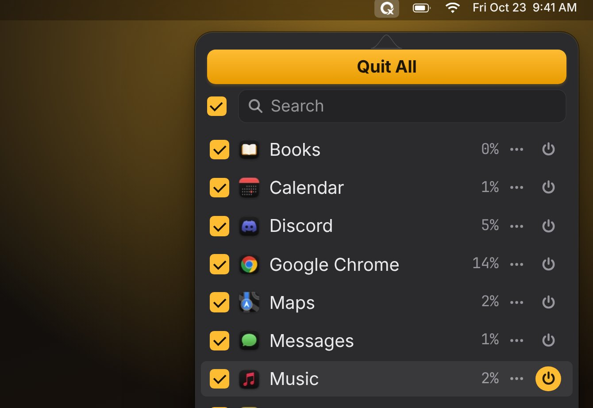

01
Quit one, some, or all
Every running app gets one row with all of its windows and helpers. Check what should go, press Quit, done. Apps still get to ask about unsaved work.
- Search, and sort by name, CPU or memory
- Quit, restart, or quit every other app from a row's ••• menu
- Apps that linger in the background are asked again, so one click is enough
